름랩은 사용자 화면만 제작하는 방식이 아니라 회원·Backend·Database·Admin을 함께 구성하여 실제 운영 가능한 Web/Mobile 서비스를 구축해 왔습니다. 본 문서는 MELIQ MVP가 요구하는 구조와 대응되는 수행 사례 3건을, 각 프로젝트의 소스코드·데이터베이스 스키마·API 정의를 직접 확인하여 정리한 것입니다.
수행 범위 — 사용자 앱(Flutter) · REST API(Express) · 원장 ERP(Next.js) · PostgreSQL 스키마 설계 및 운영 전체
학원 검색·상담 신청을 제공하는 학부모·학생용 모바일 앱과, 학원 원장이 원생·수업·수납·인사를 관리하는 원장용 ERP를 하나의 데이터베이스 위에서 운영하는 플랫폼입니다. 소비자 서비스와 사업자 운영 시스템이 같은 백엔드를 공유하는 양면(two-sided) 구조입니다.
| 인증 | Supabase Auth 기반 Bearer 토큰 검증, Kakao·Apple 소셜 로그인(SHA-256 nonce) |
| 권한 | users.roles text[] 배열 기반 8개 역할(super_admin·admin·owner·staff·teacher·student·parent·operator), 미들웨어 역할 가드 및 Row Level Security |
| 추천 | 거리·과목·목표·수업형태·예산·리뷰 6개 축 가중치 합산, 태그 유사도(Jaccard·코사인) 매칭, 0~100 정규화 점수와 추천 사유 문장 자동 생성 |
| 검색 | 위치 기반 학원 검색 RPC, 지오코딩, 지하철역·행정구역 데이터 |
| 운영 | 상담 칸반, 알림톡·SMS 발송 및 수신거부 관리, 감사 로그, 운영자 대시보드 스냅샷 |
| ERP | 원생·출결·성적·시간표·수납·급여·인사평가·SOP·구독 결제 |
| 앱 연동 | 원장이 ERP에서 설정한 학원 정보·수업 상품이 사용자 앱 노출에 반영 |
Flutter · Dart · Express · TypeScript · Next.js 14(App Router) · React 18 · PostgreSQL · Supabase(Auth·RLS·Storage) · Prisma · TanStack Query/Table · Tailwind CSS · Sentry · Firebase(Analytics·Crashlytics·Messaging) · Toss Payments · Netlify · Railway · Docker
[사용자 앱 (Flutter)] [원장 ERP (Next.js 14)] [운영자 콘솔]
│ │ │
└───────────┬─────────────────────┴───────────────────────────┘
│
[REST API (Express · /api/v1 · 라우트 33종)]
│
[PostgreSQL · 222 테이블 · RLS 459 정책]
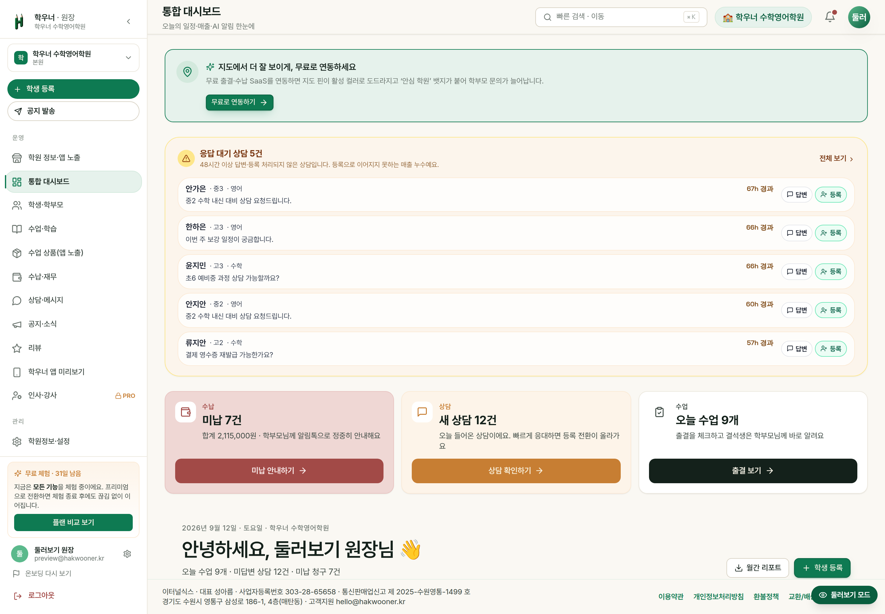
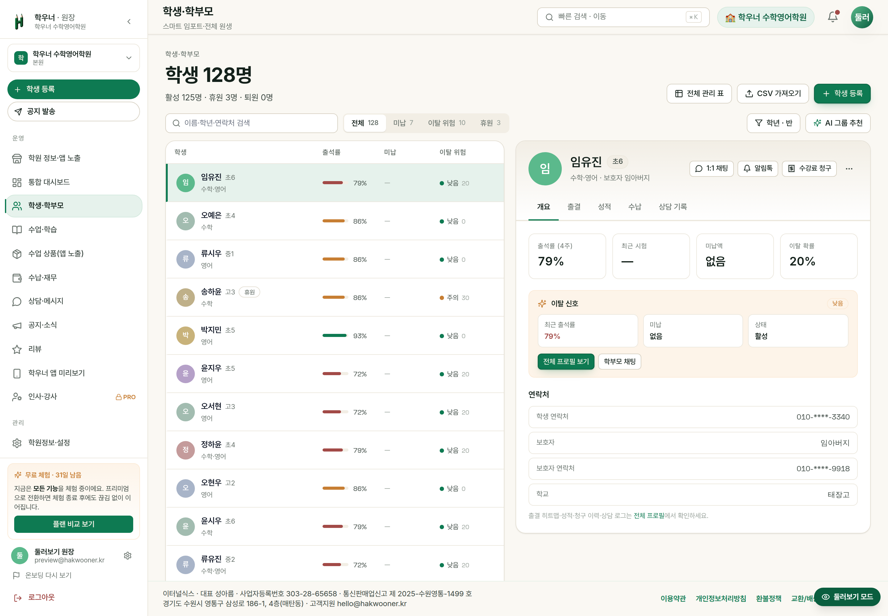
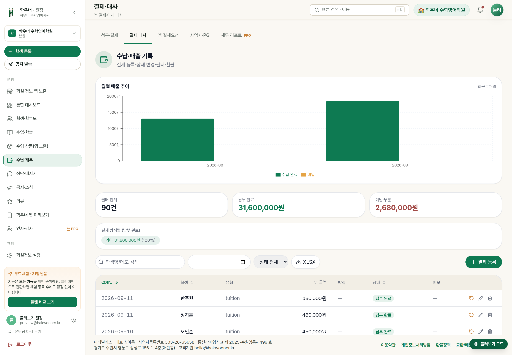
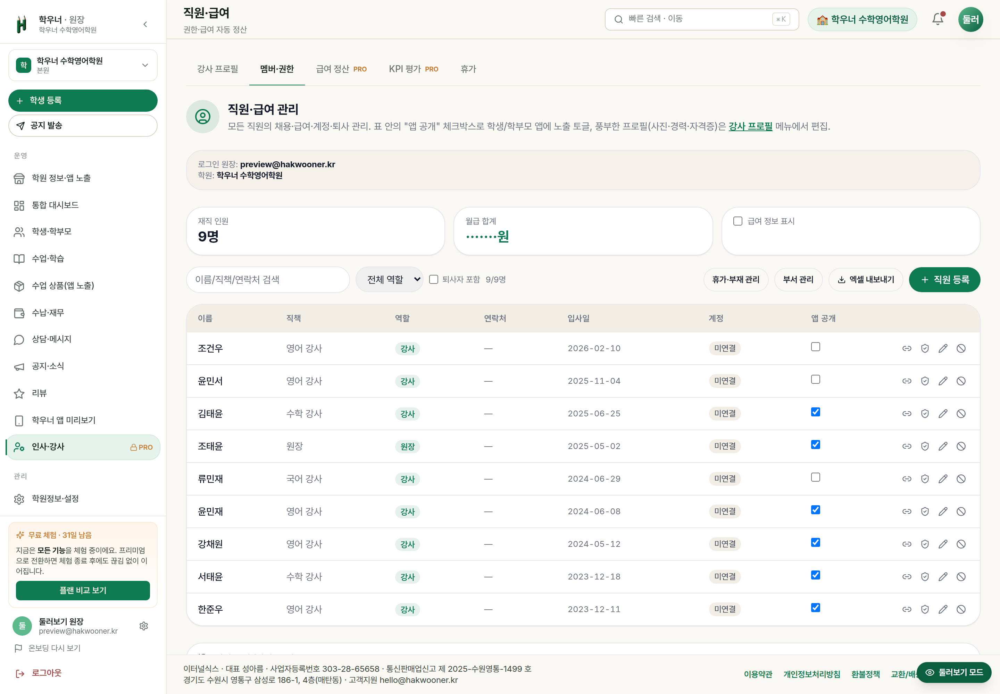
users.roles 배열과 RLS 정책에 연결되어 있어, 화면에서 막는 것과 별개로 데이터 계층에서도 접근이 제한됩니다.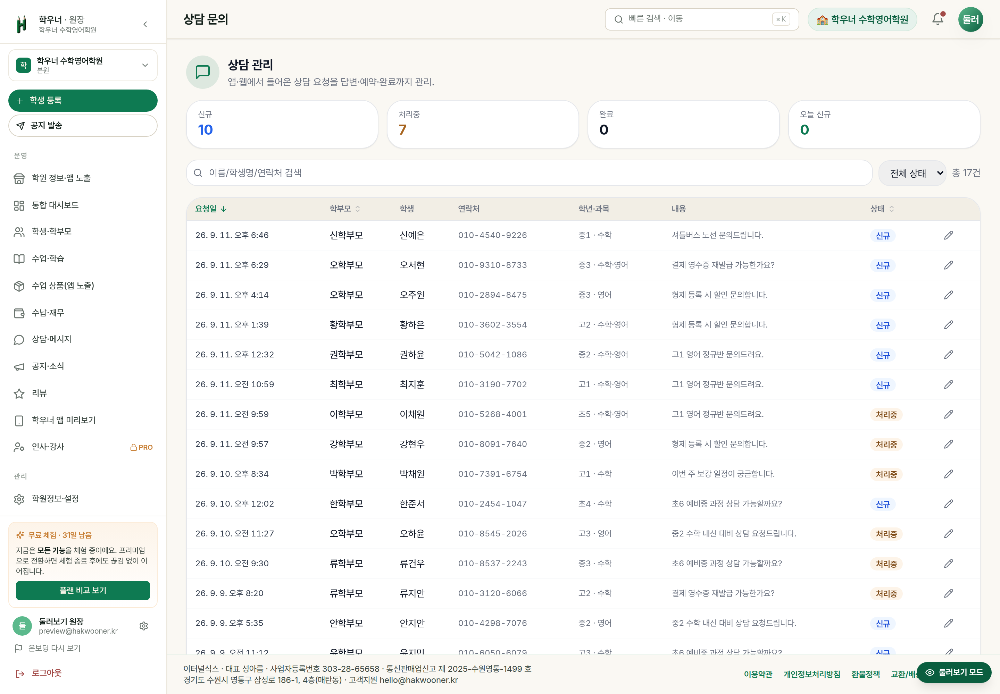
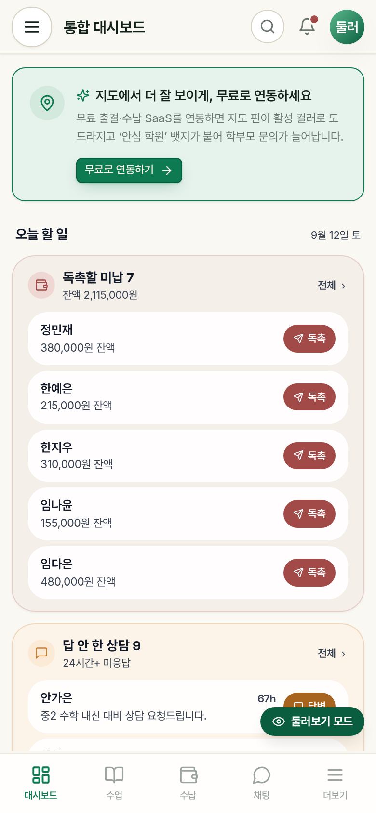
MELIQ가 요구하는 Recommendation Module · Fit Score · Why it fits가 학우너에서 이미 동일한 형태로 구현되어 있습니다.
도메인은 학원이지만, 사용자 입력을 받아 규칙으로 점수화하고 그 근거를 설명한 뒤 결과를 저장하고, 운영자가 관리 화면에서 원천 데이터를 관리하는 전체 골격이 MELIQ MVP와 그대로 대응됩니다.
수행 범위 — 모바일 우선 사용자 웹(React 19) · 관리자 콘솔 · Supabase 스키마 및 Edge Function · iOS/Android 패키징
반려동물 사료·간식의 원재료를 분석해 우리 아이 기준의 적합도와 등급으로 환산해 주는 모바일 우선 서비스입니다. 사용자는 반려동물 프로필(품종·나이·알레르기·건강 우려)을 등록하고, 제품을 검색하거나 바코드를 찍어 개인화된 분석 결과를 받습니다. 운영자는 별도 관리자 콘솔에서 제품·원재료 사전·데이터 품질을 관리합니다.
| 사용자 인증 | Supabase Auth(이메일·OAuth), Kakao 로그인 |
| 관리자 인증 | 사용자 인증과 분리된 별도 체계 — 서버 발급 HMAC 서명 세션, sessionStorage 전용, TTL 8시간, 새로고침 시 서버 재검증 |
| 권한 경계 | 관리자 쓰기는 공개 키 클라이언트로 불가. 전용 Edge Function만 경유하도록 강제 |
| 제품 DB | 제품·원재료·동의어·알레르겐 매핑·영양 프로파일을 분리한 정규화 스키마 |
| 분석 엔진 | 원재료 품질 등급, 기능성 성분 분류, 영양 공개 수준, 위험 성분 검출, 품종별 질환 규칙, 알레르기 교차반응 계열 매칭 |
| 적합도 | 기준 점수에서 알레르기·교차반응·기호도 감점을 적용해 0~100 산출, A~F 등급 및 판정 문구로 환산 |
| 결과 저장 | 분석 결과·리포트·최근 본 제품·비교함·찜 목록 |
| 데이터 품질 | 미매칭 성분 큐, 제품 보강 큐, 정보 완성도 지표, 관리자 감사 로그 |
React 19 · TypeScript · Vite 8 · React Router 7 · Zustand · Supabase(PostgreSQL·Auth·RLS·Edge Functions·Storage) · Deno · Capacitor(iOS·Android) · Vitest · Playwright · Netlify
[사용자 웹/앱 (React + Capacitor)] [관리자 콘솔 (/admin · 별도 도메인)]
│ │
│ 공개 키 (공개 SELECT + RLS) │ 관리자 토큰
│ ▼
│ [admin-write Edge Function (service_role)]
└────────────────┬───────────────────────────┘
▼
[PostgreSQL · 45 테이블 · RLS 95 정책]
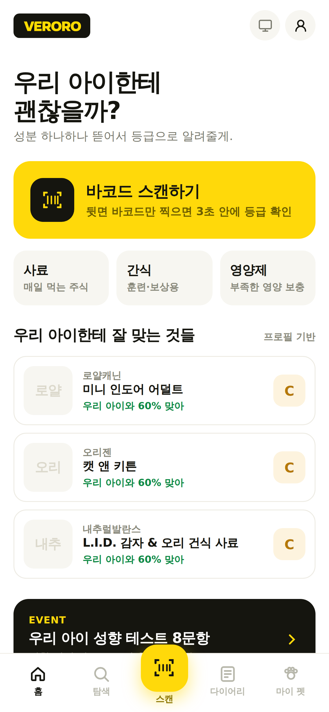
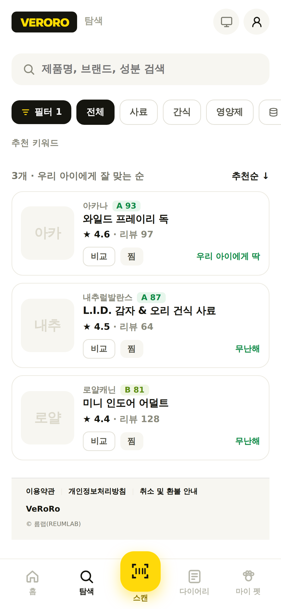
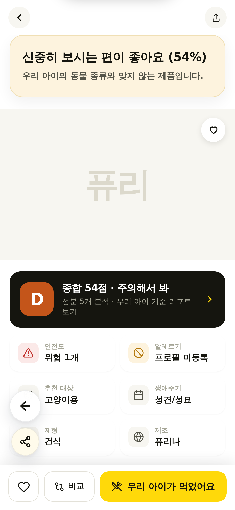
MELIQ 요건과의 직접 대응. 분석 결과 화면 한 장에 MELIQ가 요구하는 요소가 함께 놓여 있습니다 — Fit Score(적합도 %), Risk Filter(안전도 · 위험 성분 검출 수), Data Confidence(프로필 미등록 시 그 사실을 그대로 표기), Why it fits / What to watch(판정 근거 문장).
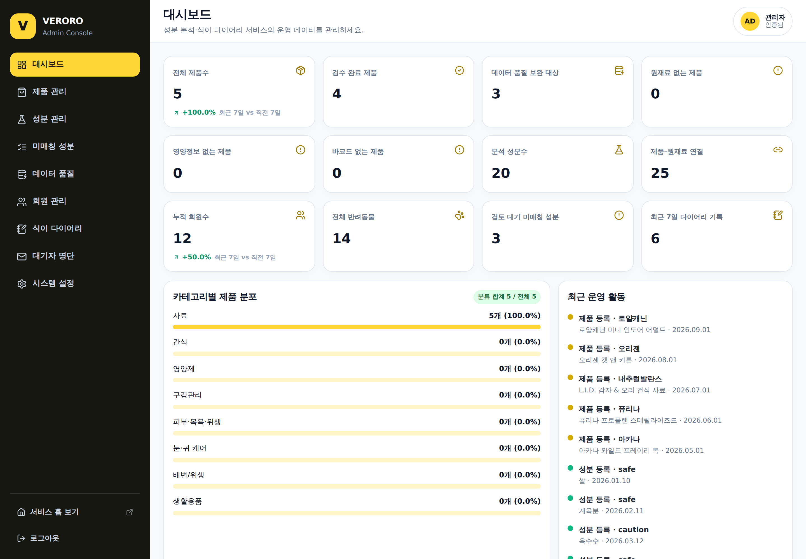
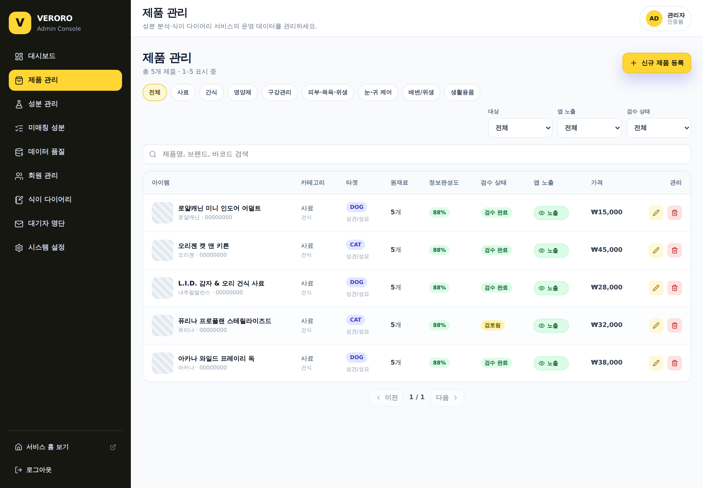
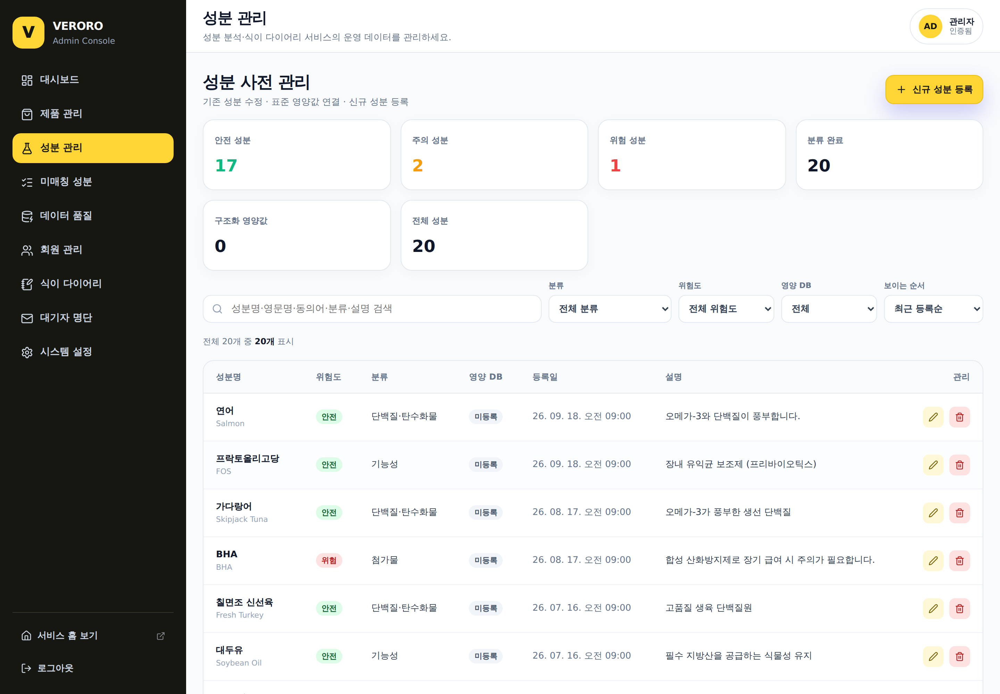
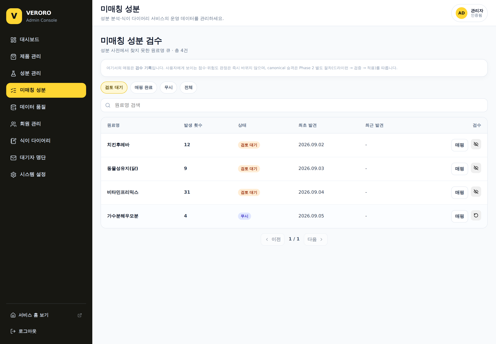
VeRoRo는 MELIQ MVP와 도메인만 다르고 구조가 거의 동일한 사례입니다.
| MELIQ 요구 | VeRoRo 대응 구현 |
|---|---|
| 사용자 입력 기반 Fit Check | 반려동물 프로필(알레르기·건강 우려·기호도) 입력 → 제품별 재계산 |
| Product DB | 제품·원재료·동의어·알레르겐 매핑·영양 프로파일 정규화 스키마 |
| 규칙 기반 Recommendation Module | 원재료 품질·위험도·질환 규칙·교차반응 계열 매칭으로 구성된 룰 엔진 |
| Risk Filter | 원재료 위험도 등급(safe/caution/danger) 및 제품 위험 요소 플래그로 필터·감점 |
| Fit Score | 0~100 적합도 + A~F 등급 + 판정 문구 |
| Data Confidence | 검수 상태(pending/reviewed/verified), 정보 완성도 %, 프로필 미등록 시 "모른다"를 그대로 표기 |
| Why it fits / What to watch | 감점 사유를 문장으로 반환("교차반응 주의 · N점 감점") |
| 결과 저장 / History | 분석 결과·리포트·최근 본 제품·비교함 |
| Admin Dashboard · Product CRUD | 관리자 콘솔 10화면, 제품·원재료 CRUD, 앱 노출 제어 |
| 사용자 ↔ 관리자 데이터 연결 | 관리자 등록·검수 → 사용자 앱 노출 및 분석 입력으로 직결 |
특히 MELIQ가 요구하는 "점수와 함께 근거를 설명하고, 모르는 값은 모른다고 표시한다"는 요건은 VeRoRo에서 이미 제품 원칙으로 구현되어 있습니다. 분석 규칙과 점수는 버전 관리 및 회귀 테스트로 고정해 두어, 규칙을 변경했을 때 기존 제품의 점수가 의도치 않게 흔들리는지 검증하는 장치도 함께 갖추고 있습니다.
다만 MELIQ가 요구하는 Affiliate Click Tracking은 VeRoRo에 제휴 링크 필드까지만 구현되어 있고 클릭 집계는 포함되어 있지 않습니다. MELIQ에서는 이 부분을 신규 구현 범위로 산정하고 있습니다.
수행 범위 — 거래처 주문 앱(Flutter) · 관리자 웹(React 19) · API 서버(Express 5) · PostgreSQL 스키마 · OpenAPI 공용 계약
세탁 공장과 거래처(식당·병원·웨딩홀 등) 사이의 주문–세탁–배송–정산 전 과정을 하나의 시스템으로 운영하는 B2B 서비스입니다. 거래처는 전용 모바일 앱으로 주문하고, 공장 운영진은 관리자 웹에서 주문 처리·배송 동선·예치금 원장·결제 대사·통계를 관리합니다.
| 주문 워크플로 | 수량 입력 → 주문 확인 → 결제 → 접수 → 세탁 → 배송 → 완료 |
| 상태 관리 | 주문 상태 5종(결제대기·주문완료·배송완료·주문취소·결제실패)과 이행 단계 4종(접수·세탁·배송·완료)을 별도 축으로 분리, 허용 전이표로 관리 |
| 동시성 | 모든 상태 변경이 단일 서비스를 경유 — 행 잠금 → 소유권 확인 → 버전 확인(낙관적 동시성) → 전이 검증 → 업무조건 검증 → 원장 처리 → 이력 기록 → 커밋 |
| 멱등성 | 취소·결제에 멱등 키를 두어 중복 요청이 원장에 두 번 반영되지 않도록 보장 |
| 이력 | 주문 상태 이력, 관리자 감사 로그, 로그인 로그, 설정 변경 이력, 반출 로그 |
| 권한 | 역할 6종 × 권한 31종 매트릭스. 서버가 권한 판정의 정본이고 프런트 가드는 UX용. 알 수 없는 역할은 거부 |
| 개인정보 보호 | 거래처 명부·주문 엑셀 등 대량 반출 권한을 조회 권한과 분리 |
| 인증 보안 | 세션 토큰 해시 저장 및 상수 시간 비교, IP·계정 단위 로그인 제한과 잠금, 유휴 자동 로그아웃 |
| 정산 · 결제 | 예치금 원장(충전·차감·취소 복원·관리자 보정·결제 취소), Toss PG 연동, 웹훅 수신, 승인·취소 대사 |
| 운영 | 배송 동선 정렬, 거래처별 마감 시각 정책, 출력 미리보기, 기간별 통계·엑셀 반출 |
Flutter · Dart · React 19 · TypeScript · Vite 6 · React Router 8 · Express 5 · node-postgres · Zod · JWT · PostgreSQL · MSW · Vitest · Playwright · Netlify · Railway · Docker Compose
[거래처 주문 앱 (Flutter)] [관리자 웹 (React · 권한별 12화면)]
│ │
└──────────────┬─────────────────────────┘
▼
[API 서버 (Express 5 · OpenAPI 2,133줄 공용 계약)]
│
[상태 전이 서비스 — 모든 주문 상태 변경의 단일 통로]
│
[PostgreSQL · 29 테이블 · 24단계 마이그레이션]
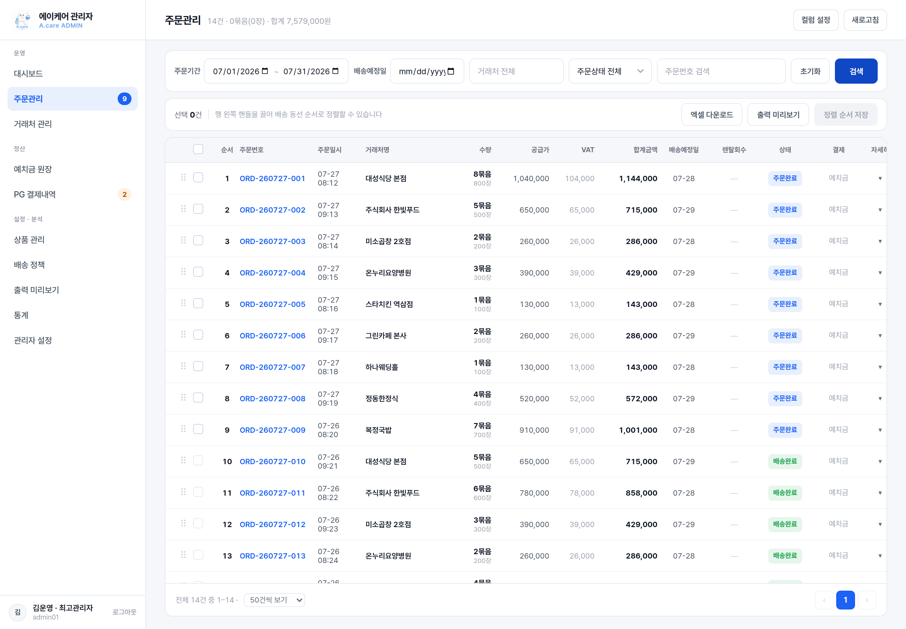
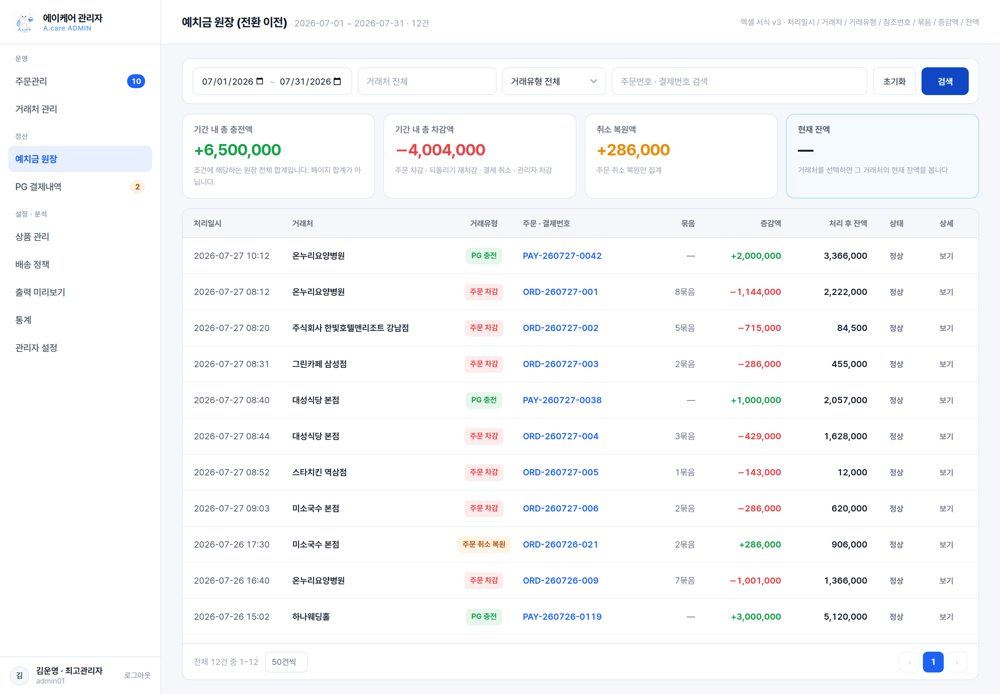
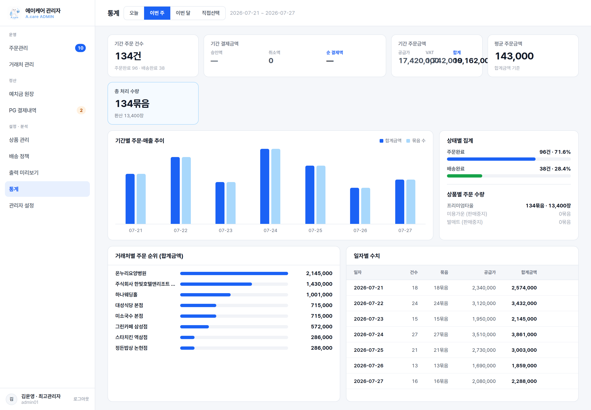
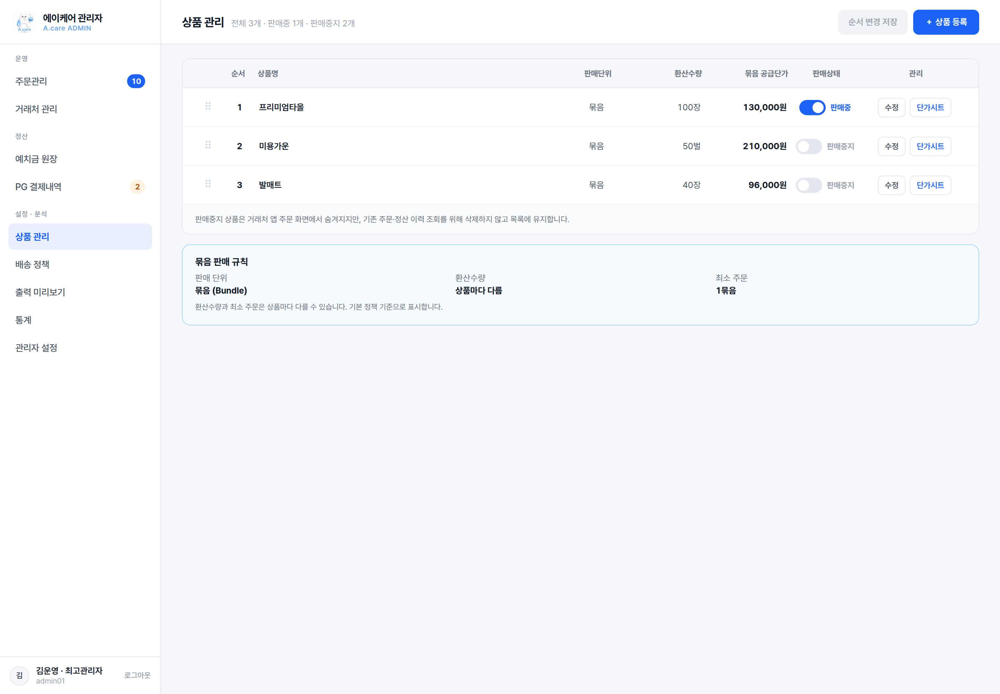
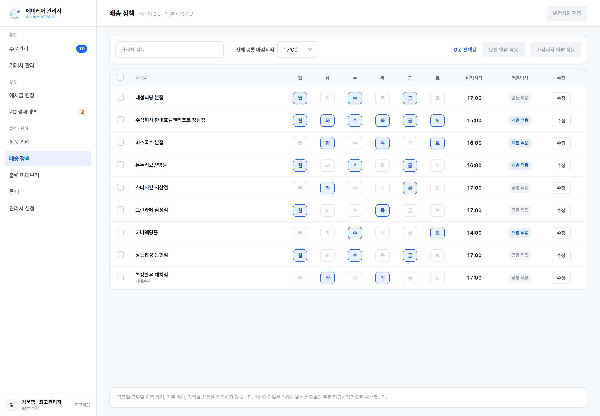
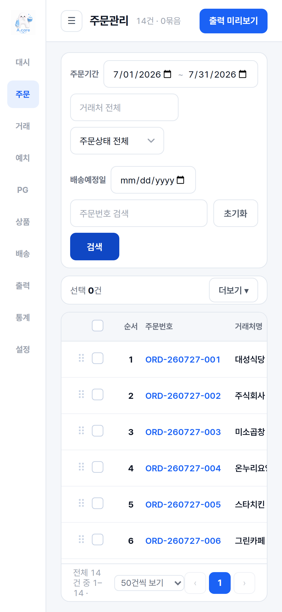
세탁앱에는 추천 기능이 없습니다. 이 사례가 MELIQ와 맞닿는 지점은 운영 가능한 SaaS 구조를 실제로 만들어 본 경험입니다.
실제 코드 · 스키마 · 설정에서 확인된 사항만 표기 — ● 확인 · △ 부분 확인 · — 확인 안 됨
| 기능 | 학우너 | VeRoRo | 세탁앱 | 표기 근거 |
|---|---|---|---|---|
| Mobile / Responsive | ● | ● | ● | Flutter 앱 / 모바일 우선 웹 + Capacitor / Flutter 앱 + 5개 폭 반응형 자동 검사 |
| 회원 / Auth | ● | ● | ● | Supabase Auth + Kakao·Apple / Supabase Auth + 관리자 별도 서명 세션 / 자체 세션(해시 저장·로그인 제한) |
| User Data | ● | ● | ● | 학생·학부모 프로필·설문 / 반려동물·알레르기 프로필·급여 일지 / 거래처 계정·잔액·단가 |
| Structured DB | ● | ● | ● | 222테이블·310마이그레이션 / 45·37 / 29·24 |
| Backend / API | ● | △ | ● | Express 33라우트 + Next 서버 라우트 / Supabase + Edge Function(전용 API 서버 없음) / Express 5 + OpenAPI |
| Admin Dashboard | ● | ● | ● | ERP 126화면 / 관리자 10화면 / 관리자 12화면 |
| CRUD | ● | ● | ● | 원생·수업·상품·직원 / 제품·원재료·미매칭 성분 / 상품·거래처·배송정책 |
| Role / Permission | ● | △ | ● | 8역할 + RLS 459정책 / 사용자·관리자 2계층(세분 역할 없음) / 6역할 × 31권한 매트릭스 |
| Workflow / Status | ● | △ | ● | 상담 처리·구독 결제 상태 / 검수 상태·보강 큐(상태 머신 없음) / 상태 5종 × 단계 4종 + 전이표 |
| History | ● | ● | ● | 추천 결과·감사 로그 / 분석 결과·리포트·최근 본 제품 / 상태 이력·감사 로그·반출 로그 |
| Analytics | ● | — | ● | Firebase Analytics + 운영 스냅샷 / 분석 SDK 미검출 / 기간별 통계 서비스 + 엑셀 반출 |
| Deployment | ● | ● | ● | Netlify·Railway·Docker / Netlify(Edge Functions 포함) / Netlify·Railway·Docker Compose |
| MELIQ 요구 | 적용 가능한 기존 구축 경험 |
|---|---|
| 회원가입 · 로그인 · 사용자 데이터 | 3개 프로젝트 모두에서 인증·세션·프로필 스키마를 직접 구축 |
| Mobile-first Responsive Web | VeRoRo(모바일 우선 웹), 세탁앱(다중 폭 반응형 자동 검사) |
| Fit Check 입력 흐름 | VeRoRo 반려동물 프로필 단계별 입력, 세탁앱 단계별 주문 흐름 |
| Product DB | VeRoRo 제품·원재료 정규화 스키마 및 데이터 품질 운영 |
| 규칙 기반 Recommendation Module | 학우너 가중치 추천 엔진, VeRoRo 룰 기반 분석 엔진 |
| Risk Filter | VeRoRo 원재료 위험도 등급 및 위험 요소 플래그 |
| Fit Score | 학우너 0~100 정규화 점수, VeRoRo 적합도·등급 |
| Data Confidence | 학우너 리뷰 검증 임계값, VeRoRo 검수 상태·정보 완성도 |
| Why it fits / What to watch | 학우너 추천 사유 생성, VeRoRo 감점 사유 문장화 |
| 결과 저장 / History | 3개 프로젝트 모두 결과·이력 테이블 운영 |
| Affiliate Click Tracking | 신규 구현 범위 (VeRoRo는 제휴 링크 필드까지만 보유) |
| Feedback | 학우너·VeRoRo 리뷰 및 구조화 응답 |
| Analytics | 학우너 Firebase Analytics·운영 스냅샷, 세탁앱 통계 서비스 |
| Admin Dashboard · Product CRUD | 3개 프로젝트 모두 운영자 관리 화면 구축 |
| Auth / Role / Permission | 세탁앱 역할×권한 매트릭스, 학우너 RLS 정책 |
| Backend / API · 관계형 DB | 학우너·세탁앱 REST API 및 PostgreSQL 스키마 운영 |
| 사용자 서비스 ↔ 관리자 데이터 연결 | 3개 프로젝트 모두 동일 DB 기반 양방향 반영 구조 |
MELIQ에서는 위 경험을 기반으로 Mobile-first 사용자 서비스, Product/User DB, Recommendation Module, Admin Dashboard를 각각 독립된 구성요소로 분리하여, 규칙과 가중치를 코드 배포 없이 조정할 수 있고 이후 확장·운영이 가능한 구조로 구현할 수 있습니다.
자료 작성 기준. 본 문서의 모든 기술 사항은 2026년 9월 12일 기준 각 프로젝트 저장소의 소스코드·데이터베이스 마이그레이션·API 정의를 직접 확인하여 작성했습니다. 코드에서 확인되지 않은 기능·성과·사용자 수·매출은 기재하지 않았습니다. 수록된 모든 화면은 로컬 실행 환경에서 각 제품의 데모·픽스처 데이터로 촬영한 것이며, 운영 데이터베이스 접속이나 실제 회원 정보 노출은 없습니다.